Chapter 3 Multiple Linear Regression
In this chapter we consider the case where we have one response variable \(y\) and multiple predictor variables \(x_1, \ldots, x_K\). Our model is \[ y = \beta_0 + \sum_{k = 1}^K \beta_k x_k + \epsilon \] where \(\epsilon\) is normal with mean 0 and standard deviation \(\sigma^2\). Note that this notation is equivalent to \[ y = \beta_0 + \beta_1 x + \epsilon \] in the single predictor case. Let’s restrict down to the case where we have three predictors, which is easier notationally.
Suppose we have data that consists of one response variable and three predictor variables, \(v, w\) and \(x\). We are interested in the model
\[ y = \beta_0 + \beta_1 v + \beta_2 w + \beta_2 x + \epsilon \]
where \(\epsilon\) is a normal random variable with mean 0 and variance \(\sigma^2\). Given data \((v_1, w_1, x_1, y_1), \ldots, (v_n, w_n, x_n, y_n)\), we compute the \(\hat \beta_i\) by minimizing the SSE,
\[ SSE = \sum_{i = 1}^n \bigl(y_i - (\beta_0 + \beta_1 v_i + \beta_2 w_i + \beta_3 x_i)\bigr)^2 \]
The R function lm will do this for you. Let’s look at some simulated data.
set.seed(1262020)
vs <- runif(30, 0, 10)
ws <- runif(30, 0, 10)
xs <- runif(30, 0, 10)
dd <- data.frame(vs,
ws,
xs,
ys = 1 + 2* vs + 3 * ws + rnorm(30, 0, 5))
mod1 <- lm(ys ~., data = dd)
mod1##
## Call:
## lm(formula = ys ~ ., data = dd)
##
## Coefficients:
## (Intercept) vs ws xs
## -4.9206 2.4045 2.8785 0.4286We can also do hypothesis tests of \(\beta_i = 0\) versus \(\beta_i \not= 0\) by looking at the summary.
##
## Call:
## lm(formula = ys ~ ., data = dd)
##
## Residuals:
## Min 1Q Median 3Q Max
## -7.5362 -3.6599 0.1165 4.0172 9.1875
##
## Coefficients:
## Estimate Std. Error t value Pr(>|t|)
## (Intercept) -4.9206 3.4043 -1.445 0.160
## vs 2.4045 0.3471 6.927 2.36e-07 ***
## ws 2.8785 0.3547 8.115 1.35e-08 ***
## xs 0.4286 0.3048 1.406 0.172
## ---
## Signif. codes: 0 '***' 0.001 '**' 0.01 '*' 0.05 '.' 0.1 ' ' 1
##
## Residual standard error: 5.014 on 26 degrees of freedom
## Multiple R-squared: 0.8083, Adjusted R-squared: 0.7862
## F-statistic: 36.54 on 3 and 26 DF, p-value: 1.794e-09We see that we reject that \(\beta_1\) and \(\beta_2\) are 0, but fail to reject that \(\beta_0\) and \(\beta_3\) are zero, at the \(\alpha = .05\) level.
Our primary goal is going to do variable selection. Many times, we have more predictors than we really need, and several of them do not contribute to the model. We will remove those predictors in order to form a simpler and more understandable model. We will also see that removing predictors leads to better prediction for future values!
Based on the above, we might consider removing xs from the model, and re-computing.
##
## Call:
## lm(formula = ys ~ vs + ws, data = dd)
##
## Residuals:
## Min 1Q Median 3Q Max
## -8.0710 -4.3232 0.3435 3.7228 8.6027
##
## Coefficients:
## Estimate Std. Error t value Pr(>|t|)
## (Intercept) -2.9041 3.1430 -0.924 0.364
## vs 2.4214 0.3532 6.856 2.29e-07 ***
## ws 2.8949 0.3609 8.022 1.28e-08 ***
## ---
## Signif. codes: 0 '***' 0.001 '**' 0.01 '*' 0.05 '.' 0.1 ' ' 1
##
## Residual standard error: 5.103 on 27 degrees of freedom
## Multiple R-squared: 0.7937, Adjusted R-squared: 0.7784
## F-statistic: 51.94 on 2 and 27 DF, p-value: 5.569e-10Our model would then be \(y = -2.9041 + 2.4214 v + 2.8949 w + \epsilon\), at which point we would probably be done removing variables.
Example 3.1 We show how to do several common types of tasks with this (simulated) data set. Before doing inference, we should check the residuals.
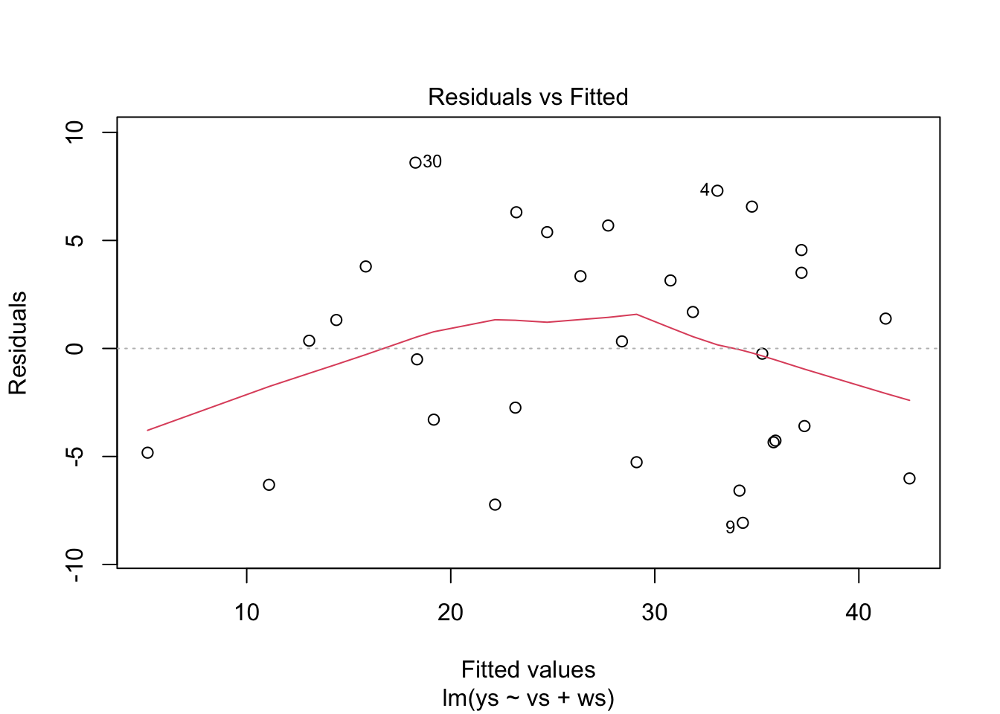
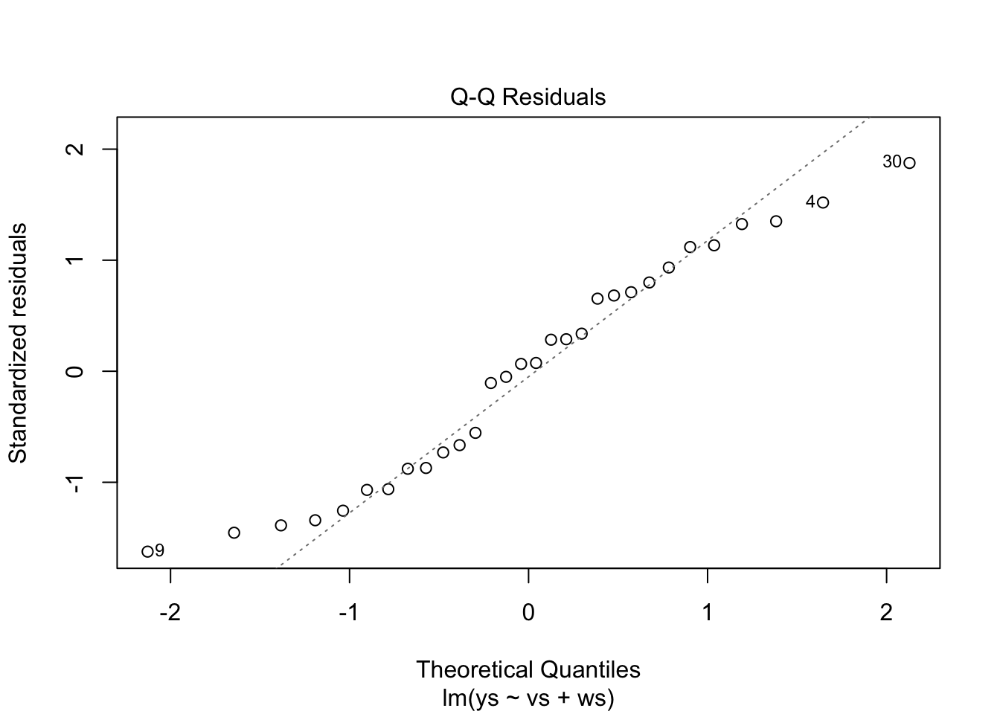
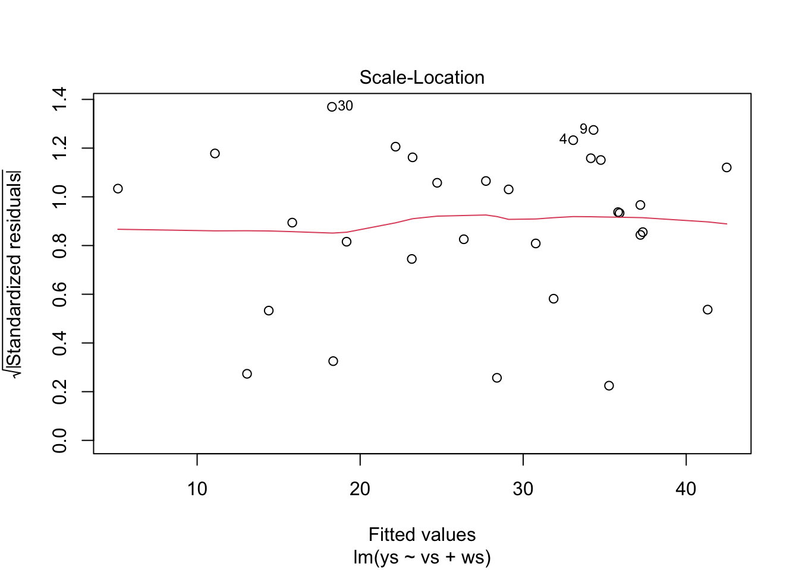
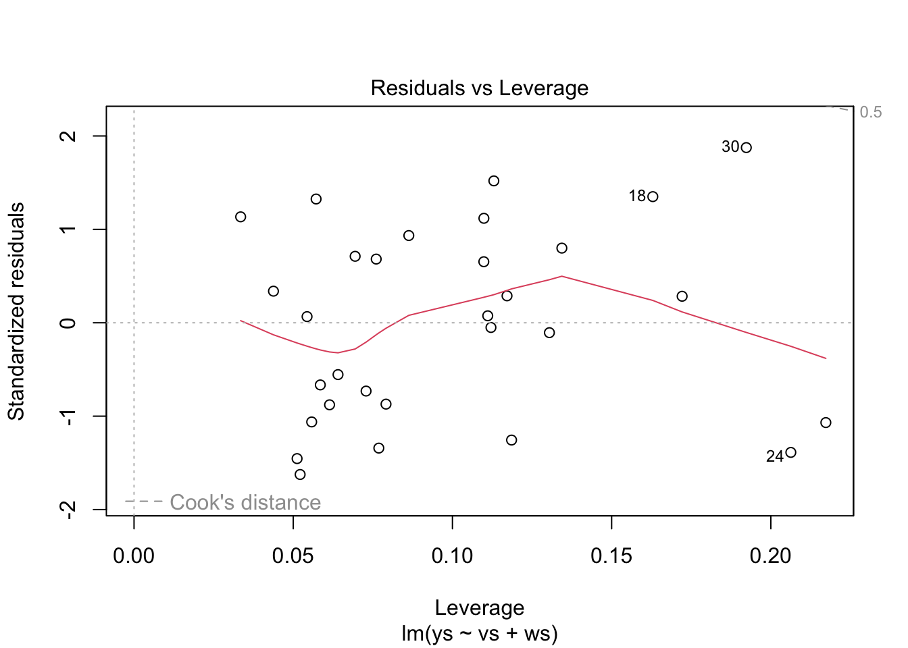
Figure 3.1: Residual plots for simulated data look fine.
Since they are fine, we can proceed. If we want a 99 percent confidence interval for \(\beta_2\), we would use confint as follows:
## 0.5 % 99.5 %
## ws 1.895039 3.894732A 99 percent confidence interval for \(\beta_2\) is \([1.895, 3.895]\).
If we want to test \(\beta_1 = 0\) versus \(\beta_1\not= 0\), we look at the \(p\)-value associated with vs. We see that it is less than .05, so we reject that \(\beta_1 = 0\) and conclude that it is not zero.
Suppose we want a 95 percent confidence interval for the mean value of the response when vs = 5 and ws = 5. We would use
## fit lwr upr
## 1 23.67748 21.57271 25.78226We see that we are 95 percent confident that the mean response is between 21.57 and 25.78 with those values of vs and ws. However, if we were imagining that we were going to get a single additional observation and we want a range of values that we are 95 percent confident that the single additional value will fall in, we would do this:
## fit lwr upr
## 1 23.67748 12.99664 34.35833We get quite a different answer: the next obserevation will be between 13 and 34 with 95 percent confidence. Note that these prediction intervals take into account both the uncertainty in our estimates for the parameters, and the inherent uncertainty when sampling a single value.
Let’s look at another example. Consider the data in cystfibr in the ISwR package. Our treatment of this data set follows the treatment given in Dalgaard’s book. Let’s start by seeing what kind of data we are dealing with. According to the description, “It contains lung function data for cystic fibrosis patients (7–23 years old).” I recommend running ?ISwR::cystfibr and reading about the variables involved in this data.
We begin by plotting and summarizing the data.
## age sex height weight bmp
## Min. : 7.00 Min. :0.00 Min. :109.0 Min. :12.9 Min. :64.00
## 1st Qu.:11.00 1st Qu.:0.00 1st Qu.:139.0 1st Qu.:25.1 1st Qu.:68.00
## Median :14.00 Median :0.00 Median :156.0 Median :37.2 Median :71.00
## Mean :14.48 Mean :0.44 Mean :152.8 Mean :38.4 Mean :78.28
## 3rd Qu.:17.00 3rd Qu.:1.00 3rd Qu.:174.0 3rd Qu.:51.1 3rd Qu.:90.00
## Max. :23.00 Max. :1.00 Max. :180.0 Max. :73.8 Max. :97.00
## fev1 rv frc tlc pemax
## Min. :18.00 Min. :158.0 Min. :104.0 Min. : 81 Min. : 65.0
## 1st Qu.:26.00 1st Qu.:188.0 1st Qu.:127.0 1st Qu.:101 1st Qu.: 85.0
## Median :33.00 Median :225.0 Median :139.0 Median :113 Median : 95.0
## Mean :34.72 Mean :255.2 Mean :155.4 Mean :114 Mean :109.1
## 3rd Qu.:44.00 3rd Qu.:305.0 3rd Qu.:183.0 3rd Qu.:128 3rd Qu.:130.0
## Max. :57.00 Max. :449.0 Max. :268.0 Max. :147 Max. :195.0There’s not a whole lot to see here. frc, weight and pemax appear to be right skew, and sex has been miscoded as numeric rather than as a factor. Let’s recode.
cystfibr$sex <- factor(cystfibr$sex, levels = c(0, 1), labels = c("Male", "Female"))
summary(cystfibr$sex)## Male Female
## 14 11Now, let’s do a scatterplot.
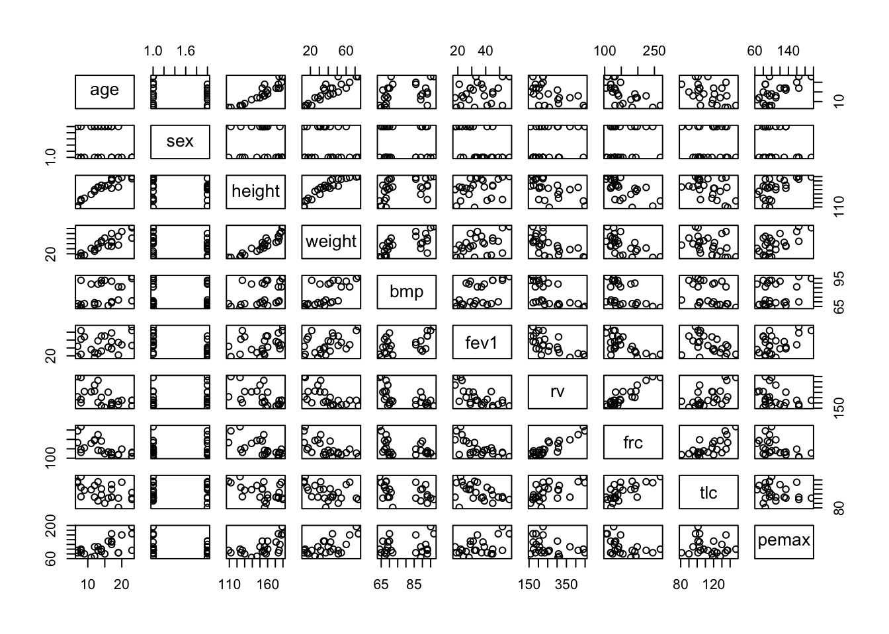
That’s pretty spectacular, but not very informative. It looks like height and weight are related, as well as age. The variable pemax, which is the variable of interest, appears to be correlated with some of the other variables, but is is hard to tell. Here is a tidy plot. We use the original ISwR::cystfibr because in this case, we don’t want sex coded as a factor.
library(tidyverse)
ISwR::cystfibr %>% tidyr::pivot_longer(cols = -pemax,
names_to = "variable",
values_to = "value") %>%
ggplot(aes(x = value, y = pemax)) + geom_point() +
facet_wrap(facets = ~variable, scales = "free_x") 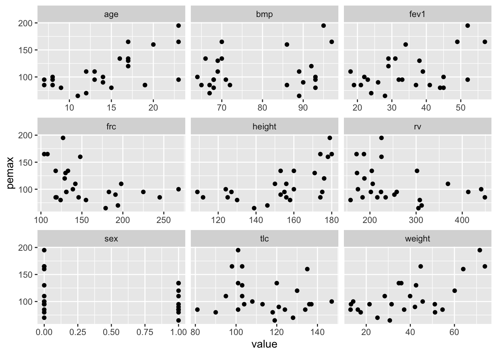
Wait, what do I mean by correlated???
We define the covariance of \(X\) and \(Y\) to be \[ E[(X - \mu_X) (Y - \mu_Y)] = E[XY] - E[X]E[Y], \] where \(\mu_X\) is the mean of \(X\) and \(\mu_Y\) is the mean of \(Y\). Looking at the first expression, we see that \((X - \mu_X) (Y - \mu_Y)\) is positive exactly when either both \(X\) and \(Y\) are bigger than their means, or when both \(X\) and \(Y\) are less than their means. Therefore, we expect to see a positive covariance if increased values of \(X\) are probabilistically associated with increased values of \(Y\), and we expect to see a negatice covariance when increased values of \(X\) are associated with decreased values of \(Y\).
The correlation of \(X\) and \(Y\) is given by \[ \rho(X, Y) = \frac{E[(X - \mu_X) (Y - \mu_Y)]}{\sigma_X \sigma_Y} \] The correlation is easier to interpret in most cases than the covariance, because the values are between \(-1\) and \(1\). A value of \(\pm 1\) corresponds to a perfect linear relationship between \(X\) and \(Y\), and the larger tha absolute value of the correlation is, the stronger we expect the linear relationship of \(X\) and \(Y\) to be.
We can estimate the covariance and correlation using the built in R functions cov and cor. If we apply cor to a data frame, then it computes the correlation of each pair of variables separately.
## age height weight bmp fev1 rv
## age 1.0000000 0.9260520 0.9058675 0.3777643 0.2944880 -0.5519445
## height 0.9260520 1.0000000 0.9206953 0.4407623 0.3166636 -0.5695199
## weight 0.9058675 0.9206953 1.0000000 0.6725463 0.4488393 -0.6215056
## bmp 0.3777643 0.4407623 0.6725463 1.0000000 0.5455204 -0.5823729
## fev1 0.2944880 0.3166636 0.4488393 0.5455204 1.0000000 -0.6658557
## rv -0.5519445 -0.5695199 -0.6215056 -0.5823729 -0.6658557 1.0000000
## frc -0.6393569 -0.6242769 -0.6172561 -0.4343888 -0.6651149 0.9106029
## tlc -0.4693733 -0.4570819 -0.4184676 -0.3649035 -0.4429945 0.5891391
## pemax 0.6134741 0.5992195 0.6352220 0.2295148 0.4533757 -0.3155501
## frc tlc pemax
## age -0.6393569 -0.4693733 0.6134741
## height -0.6242769 -0.4570819 0.5992195
## weight -0.6172561 -0.4184676 0.6352220
## bmp -0.4343888 -0.3649035 0.2295148
## fev1 -0.6651149 -0.4429945 0.4533757
## rv 0.9106029 0.5891391 -0.3155501
## frc 1.0000000 0.7043999 -0.4172078
## tlc 0.7043999 1.0000000 -0.1816157
## pemax -0.4172078 -0.1816157 1.0000000Indeed, we see that age, height and weight are pretty strongly correlated, as are some of the lung function variables. pemax is not highly correlated with any one other variable.
Let’s run multiple regression on all of the variables at once, and see what we get:
##
## Call:
## lm(formula = pemax ~ ., data = cystfibr)
##
## Residuals:
## Min 1Q Median 3Q Max
## -37.338 -11.532 1.081 13.386 33.405
##
## Coefficients:
## Estimate Std. Error t value Pr(>|t|)
## (Intercept) 176.0582 225.8912 0.779 0.448
## age -2.5420 4.8017 -0.529 0.604
## sexFemale -3.7368 15.4598 -0.242 0.812
## height -0.4463 0.9034 -0.494 0.628
## weight 2.9928 2.0080 1.490 0.157
## bmp -1.7449 1.1552 -1.510 0.152
## fev1 1.0807 1.0809 1.000 0.333
## rv 0.1970 0.1962 1.004 0.331
## frc -0.3084 0.4924 -0.626 0.540
## tlc 0.1886 0.4997 0.377 0.711
##
## Residual standard error: 25.47 on 15 degrees of freedom
## Multiple R-squared: 0.6373, Adjusted R-squared: 0.4197
## F-statistic: 2.929 on 9 and 15 DF, p-value: 0.03195A couple of things to notice: first, the p-value is 0.03195, which indicates that the variables together do have a statistically significant predictive value for pemax. However, looking at the list, no one variable seems necessary. The reason for this is that the \(p\)-values for each variable is testing what happens when we remove only that variable. So, for example, we can remove weight and not upset the model too much. Of course, since height is strongly correlated with weight, it may just be that height will serve as a proxy for weight in the event that weight is removed!
We start to eliminate variables that are not statistically significant in the model. We will begin with the other lung function data, for as long as we are allowed to continue to remove. The order chosen for removal is: tlc, frc, rv, fev1.
##
## Call:
## lm(formula = pemax ~ height + age + weight + sex + bmp + fev1 +
## rv + frc, data = cystfibr)
##
## Residuals:
## Min 1Q Median 3Q Max
## -38.072 -10.067 0.113 13.526 36.990
##
## Coefficients:
## Estimate Std. Error t value Pr(>|t|)
## (Intercept) 221.8055 185.4350 1.196 0.2491
## height -0.5428 0.8428 -0.644 0.5286
## age -3.1346 4.4144 -0.710 0.4879
## weight 3.3157 1.7672 1.876 0.0790 .
## sexFemale -4.6933 14.8363 -0.316 0.7558
## bmp -1.9403 1.0047 -1.931 0.0714 .
## fev1 1.0183 1.0392 0.980 0.3417
## rv 0.1857 0.1887 0.984 0.3396
## frc -0.2605 0.4628 -0.563 0.5813
## ---
## Signif. codes: 0 '***' 0.001 '**' 0.01 '*' 0.05 '.' 0.1 ' ' 1
##
## Residual standard error: 24.78 on 16 degrees of freedom
## Multiple R-squared: 0.6339, Adjusted R-squared: 0.4508
## F-statistic: 3.463 on 8 and 16 DF, p-value: 0.01649##
## Call:
## lm(formula = pemax ~ height + age + weight + sex + bmp + fev1 +
## rv, data = cystfibr)
##
## Residuals:
## Min 1Q Median 3Q Max
## -39.425 -12.391 3.834 14.797 36.693
##
## Coefficients:
## Estimate Std. Error t value Pr(>|t|)
## (Intercept) 166.71822 154.31294 1.080 0.2951
## height -0.40981 0.79257 -0.517 0.6118
## age -1.81783 3.66773 -0.496 0.6265
## weight 2.87386 1.55120 1.853 0.0814 .
## sexFemale 0.10239 11.89990 0.009 0.9932
## bmp -1.94971 0.98415 -1.981 0.0640 .
## fev1 1.41526 0.74788 1.892 0.0756 .
## rv 0.09567 0.09798 0.976 0.3425
## ---
## Signif. codes: 0 '***' 0.001 '**' 0.01 '*' 0.05 '.' 0.1 ' ' 1
##
## Residual standard error: 24.28 on 17 degrees of freedom
## Multiple R-squared: 0.6266, Adjusted R-squared: 0.4729
## F-statistic: 4.076 on 7 and 17 DF, p-value: 0.008452##
## Call:
## lm(formula = pemax ~ height + age + weight + sex + bmp + fev1,
## data = cystfibr)
##
## Residuals:
## Min 1Q Median 3Q Max
## -43.238 -7.403 -0.081 15.534 36.028
##
## Coefficients:
## Estimate Std. Error t value Pr(>|t|)
## (Intercept) 260.6313 120.5215 2.163 0.0443 *
## height -0.6067 0.7655 -0.793 0.4384
## age -2.9062 3.4898 -0.833 0.4159
## weight 3.3463 1.4719 2.273 0.0355 *
## sexFemale -1.2115 11.8083 -0.103 0.9194
## bmp -2.3042 0.9136 -2.522 0.0213 *
## fev1 1.0274 0.6329 1.623 0.1219
## ---
## Signif. codes: 0 '***' 0.001 '**' 0.01 '*' 0.05 '.' 0.1 ' ' 1
##
## Residual standard error: 24.24 on 18 degrees of freedom
## Multiple R-squared: 0.6057, Adjusted R-squared: 0.4743
## F-statistic: 4.608 on 6 and 18 DF, p-value: 0.00529##
## Call:
## lm(formula = pemax ~ height + age + weight + sex + bmp, data = cystfibr)
##
## Residuals:
## Min 1Q Median 3Q Max
## -43.194 -9.412 -2.425 9.157 40.112
##
## Coefficients:
## Estimate Std. Error t value Pr(>|t|)
## (Intercept) 280.4482 124.9556 2.244 0.0369 *
## height -0.6853 0.7962 -0.861 0.4001
## age -3.0750 3.6352 -0.846 0.4081
## weight 3.5546 1.5281 2.326 0.0312 *
## sexFemale -11.5281 10.3720 -1.111 0.2802
## bmp -1.9613 0.9263 -2.117 0.0476 *
## ---
## Signif. codes: 0 '***' 0.001 '**' 0.01 '*' 0.05 '.' 0.1 ' ' 1
##
## Residual standard error: 25.27 on 19 degrees of freedom
## Multiple R-squared: 0.548, Adjusted R-squared: 0.429
## F-statistic: 4.606 on 5 and 19 DF, p-value: 0.006388When removing variables in a stepwise manner such as above, it is important to consider adding variables back into the model. Since we have removed all of the lung function data one variable at a time, let’s see whether the group of lung function data is significant as a whole. This serves as a sort of test as to whether we need to consider adding variables back in to the model.
mod1 <- lm(pemax~., data = cystfibr)
mod2 <- lm(pemax~height+age+weight+sex+bmp, data = cystfibr)
anova(mod2, mod1)## Analysis of Variance Table
##
## Model 1: pemax ~ height + age + weight + sex + bmp
## Model 2: pemax ~ age + sex + height + weight + bmp + fev1 + rv + frc +
## tlc
## Res.Df RSS Df Sum of Sq F Pr(>F)
## 1 19 12129.2
## 2 15 9731.2 4 2398 0.9241 0.4758Since the \(p\)-value is 0.4758, this is an indication that the group of variables is not significant as a whole, and we are at least somewhat justified in removing the group.
Returning to variable selection, we see that age, height and sex don’t seem important, so let’s start removing.
##
## Call:
## lm(formula = pemax ~ height + weight + sex + bmp, data = cystfibr)
##
## Residuals:
## Min 1Q Median 3Q Max
## -46.202 -11.699 -1.845 10.322 38.744
##
## Coefficients:
## Estimate Std. Error t value Pr(>|t|)
## (Intercept) 251.3973 119.2859 2.108 0.0479 *
## height -0.8128 0.7762 -1.047 0.3075
## weight 2.6947 1.1329 2.379 0.0275 *
## sexFemale -11.5458 10.2979 -1.121 0.2755
## bmp -1.4881 0.7330 -2.030 0.0558 .
## ---
## Signif. codes: 0 '***' 0.001 '**' 0.01 '*' 0.05 '.' 0.1 ' ' 1
##
## Residual standard error: 25.09 on 20 degrees of freedom
## Multiple R-squared: 0.5309, Adjusted R-squared: 0.4371
## F-statistic: 5.66 on 4 and 20 DF, p-value: 0.003253##
## Call:
## lm(formula = pemax ~ weight + sex + bmp, data = cystfibr)
##
## Residuals:
## Min 1Q Median 3Q Max
## -47.05 -11.65 4.23 13.75 45.35
##
## Coefficients:
## Estimate Std. Error t value Pr(>|t|)
## (Intercept) 132.9306 37.9132 3.506 0.002101 **
## weight 1.5810 0.3910 4.044 0.000585 ***
## sexFemale -11.7140 10.3203 -1.135 0.269147
## bmp -1.0140 0.5777 -1.755 0.093826 .
## ---
## Signif. codes: 0 '***' 0.001 '**' 0.01 '*' 0.05 '.' 0.1 ' ' 1
##
## Residual standard error: 25.14 on 21 degrees of freedom
## Multiple R-squared: 0.5052, Adjusted R-squared: 0.4345
## F-statistic: 7.148 on 3 and 21 DF, p-value: 0.001732##
## Call:
## lm(formula = pemax ~ weight + bmp, data = cystfibr)
##
## Residuals:
## Min 1Q Median 3Q Max
## -42.924 -13.399 4.361 16.642 48.404
##
## Coefficients:
## Estimate Std. Error t value Pr(>|t|)
## (Intercept) 124.8297 37.4786 3.331 0.003033 **
## weight 1.6403 0.3900 4.206 0.000365 ***
## bmp -1.0054 0.5814 -1.729 0.097797 .
## ---
## Signif. codes: 0 '***' 0.001 '**' 0.01 '*' 0.05 '.' 0.1 ' ' 1
##
## Residual standard error: 25.31 on 22 degrees of freedom
## Multiple R-squared: 0.4749, Adjusted R-squared: 0.4271
## F-statistic: 9.947 on 2 and 22 DF, p-value: 0.0008374Again, we have removed a group of variables that are related, so let’s see if the group as a whole is significant. If it were, then we would need to consider adding variables back in to our model.
## Analysis of Variance Table
##
## Model 1: pemax ~ weight + bmp
## Model 2: pemax ~ height + age + weight + sex + bmp
## Res.Df RSS Df Sum of Sq F Pr(>F)
## 1 22 14090
## 2 19 12129 3 1961.3 1.0241 0.4041This indicates that we are justified in removing the age, weight and sex variables. And now, bmp also doesn’t seem important. We are left with modeling pemax on weight, similar to what we had before.
Exercise 3.1 Consider the data set ISwR::secher. Read about the data set by typing ?ISwR::secher. We are interested in predicting birth weight on the other variables.
Should any of the variables be removed immediately without doing any testing?
Find a minimal meaningful model that explains birthweight in terms of other variable(s).
Check the residuals.
3.0.1 Aside on multiple R squared and ANOVA
The Multiple R Squared value is 0.6373. This means that the model explains 63% of the variance of pemax. To better understand what that means, let’s see how we could calculate it. First, we compute the total variance of pemax.
Now, we compute the variance of the residuals of our model. We can think of the variance of the residuals as the variance in pemax that remains unexplained after taking into account the variables in our model. Notice that we don’t correct for the number of parameters we are estimating.
So, the percentage of variance explained is:
## [1] 0.6373354What would have happened if we had used the variance adjusted for the number of parameters that we are estimating?
residuals_var_corrected <- 1/(25 - (9 + 1)) * sum(my.mod$residuals^2)
(pemax_var - residuals_var_corrected)/pemax_var## [1] 0.4197366In this case, we get the adjusted \(R^2\)! Whoa!
Exercise 3.2 In this exercise, you will see evidence that adding variables always increases the multiple R squared, but that adding noise to a model generally decreases the adjusted R squared. Define cystifbr$random <- rnorm(25).
a. Compute the Multiple R-squared when `pemax` is modeled on all of the predictors. How does it compare to 0.6373354? You may need to compute it out to many digits to see a difference!
b. Repeat for the adjusted R-squared. How does it compare to 0.4197366?Moving on, we said above that the variables taken together have a \(p\)-value of 0.03195. What does that mean, exactly?
Let’s consider the case where we have three predictors and one response, to make things a bit simpler. Our null hypothesis would be that there is no linear association between the three predictors and the response. In other words, if our model is \(y = \beta_0 + \beta_1 x_1 + \beta_2 x_2 + \beta_3 x_3 + \epsilon\), then the null hypothesis is that \(\beta_1 = \beta_2 = \beta_3 = 0\), and the alternative hypothesis is that not all of them are zero.
As we saw above, the multiple R squared will never be zero, but we ask the question: how big is big enough that we can be pretty sure that it isn’t due to chance? We could do it directly via simulations, but we are supposed to be doing classical theory now! So, let’s see what kind of distribuytions the component pieces have.
We start with the estimate of \(\sigma^2\) based on the residuals.
set.seed(1262020)
x1s <- runif(30, 0, 10)
x2s <- runif(30, 0, 10)
x3s <- runif(30, 0, 10)
dd <- data.frame(x1s = x1s,
x2s = x2s,
x3s = x3s,
ys = 1 + 2 * x1s + 3 * x2s + rnorm(30, 0, 10)
)
summary(lm(ys ~ ., data = dd))##
## Call:
## lm(formula = ys ~ ., data = dd)
##
## Residuals:
## Min 1Q Median 3Q Max
## -15.0724 -7.3197 0.2331 8.0343 18.3749
##
## Coefficients:
## Estimate Std. Error t value Pr(>|t|)
## (Intercept) -10.8411 6.8087 -1.592 0.123415
## x1s 2.8090 0.6943 4.046 0.000415 ***
## x2s 2.7570 0.7094 3.886 0.000628 ***
## x3s 0.8572 0.6096 1.406 0.171517
## ---
## Signif. codes: 0 '***' 0.001 '**' 0.01 '*' 0.05 '.' 0.1 ' ' 1
##
## Residual standard error: 10.03 on 26 degrees of freedom
## Multiple R-squared: 0.5521, Adjusted R-squared: 0.5004
## F-statistic: 10.68 on 3 and 26 DF, p-value: 9.334e-05Based on our previous work, we would expect an unbiased estimator for \(\sigma^2\) to be the sum-squared residuals over (30 - 4), where 4 is the number of parameters that we estimated. Let’s see if that is right. First we check that the esimate of the variance \(\sigma^2\) in the summary really is computed by dividing by 26.
## [1] 100.5415## [1] 100.5415Yep. Now, let’s see that it appears to be an unbiased estimate for \(\sigma^2\).
Theorem 3.1 Let \(\hat \epsilon_i\) be the residuals when \(y = \beta_0 + \sum_{k = 1}^K \beta_k x_k + \epsilon\), with \(\epsilon \sim N(0, \sigma^2)\). Then \(\frac{1}{n - (K + 1)}\sum_{i = 1}^n \hat \epsilon^2\) is an unbiased estimator for \(\sigma^2\).
We denote the estimator \(\hat \sigma^2 = \frac{1}{n - (K + 1)}\sum_{i = 1}^n \hat \epsilon^2\).
sim_data <- replicate(10000, {
dd <- data.frame(x1s = x1s,
x2s = x2s,
x3s = x3s,
ys = 1 + 2 * x1s + 3 * x2s + rnorm(30, 0, 10)
)
summary(lm(ys ~ ., data = dd))$sigma^2
})
mean(sim_data)## [1] 99.97615Yep. (Repeat the above code a few times to see that it appears to be centered at 100.) What kind of rv is our estimate for \(\sigma^2\)? We can adjust it to be \(\chi^2\)!
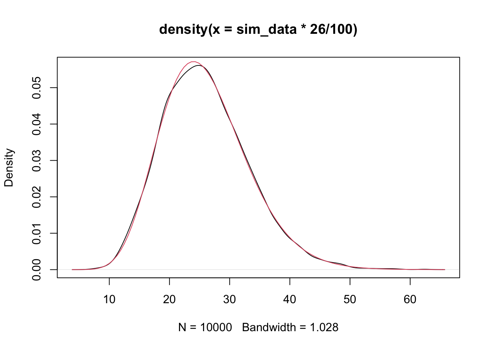
To summarize, we have the following theorem.
Theorem 3.2 Let \(\hat \epsilon_i\) be the residuals when \(y = \beta_0 + \sum_{k = 1}^K \beta_k x_k + \epsilon\), with \(\epsilon \sim N(0, \sigma^2)\), and let \(\hat \sigma^2\) denote the estimator for \(\sigma\) discussed above. Then, \(\frac{n - (K + 1) \hat \sigma^2}{\sigma^2} \sim \chi^2_{n - (K + 1)}\). That is, \(\frac{n - (K + 1) \hat \sigma^2}{\sigma^2}\) is a \(\chi^2\) random variable with \(n - (K + 1)\) degrees of freedom.
Next, we assume that the null is true. We can estimate the variance as follows, which we denote as \(V(y)\).
sim_data_2 <- replicate(10000, {
ys = rnorm(30, 0, 10)
sum((ys - mean(ys))^2)/29
})
plot(density(sim_data_2 * 29 / 100))
curve(dchisq(x, 29), add = T, col = 2)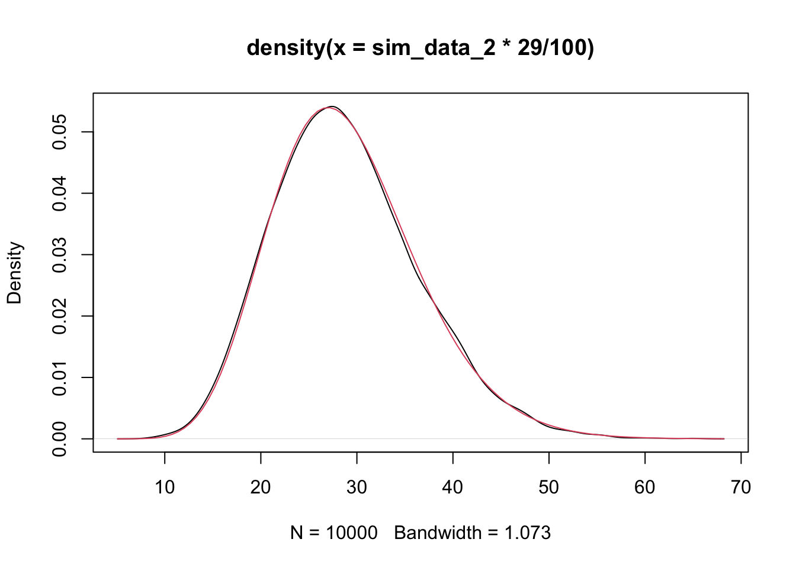
We see that the variance estimate in this case is a \(\chi^2\) random variable with 29 degrees of freedom. Now the cool part. What about the difference between the variance we computed both ways?? Again, let’s assume that the null hypothesis is TRUE
sim_data_3 <- replicate(10000, {
dd <- data.frame(x1s = x1s,
x2s = x2s,
x3s = x3s,
ys = rnorm(30, 0, 10)
)
sum((dd$ys - mean(dd$ys))^2)/29 * 29/100 -summary(lm(ys ~ ., data = dd))$sigma^2 * 26/100
})
plot(density(sim_data_3))
curve(dchisq(x, 3), add = T, col = 2)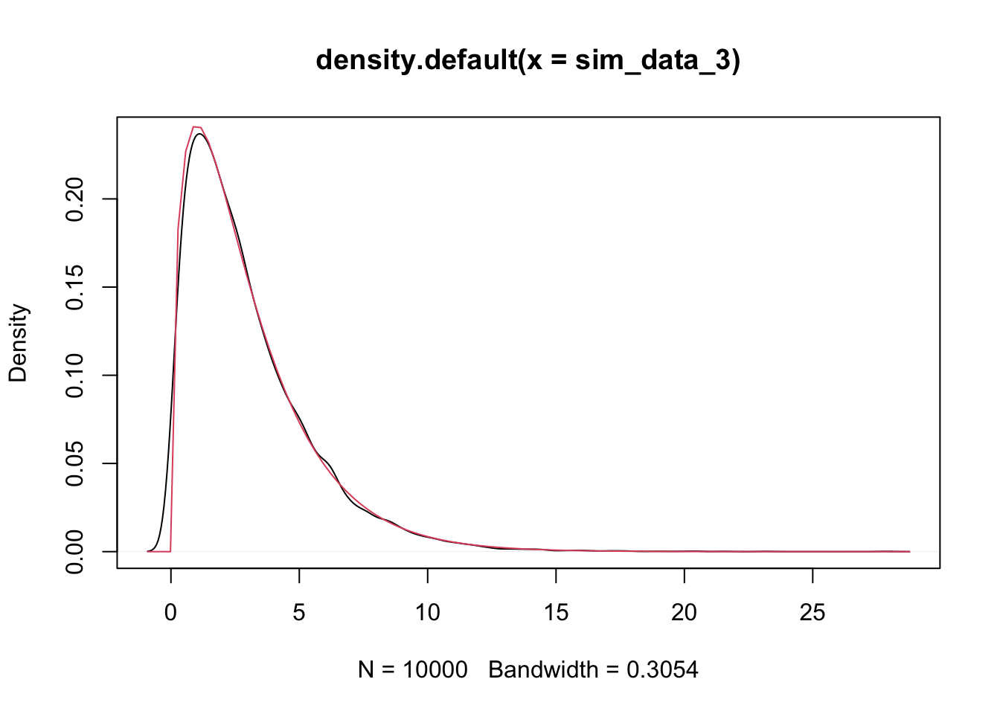
Finally, we take the ratio, similar to the multiple R squared.
sim_data_3 <- replicate(10000, {
dd <- data.frame(x1s = x1s,
x2s = x2s,
x3s = x3s,
ys = rnorm(30, 0, 10)
)
((sum((dd$ys - mean(dd$ys))^2)/100 -summary(lm(ys ~ ., data = dd))$sigma^2 * 26/100)/3)/ (summary(lm(ys ~ ., data = dd))$sigma^2 * 26/100/26)
})
plot(density(sim_data_3))
curve(df(x, 3, 26), add = T, col = 2)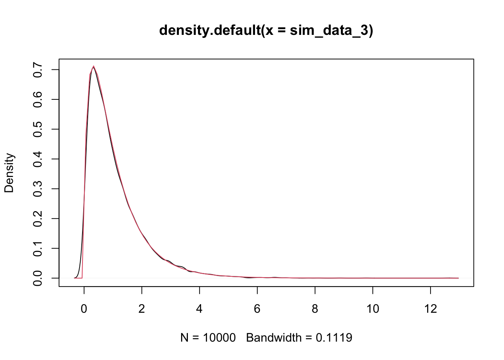
We again summarize the above in the following theorem.
Theorem 3.3 With the notation from this section,
\(\frac{(n - 1)V(y)}{\sigma^2} - \frac{n - (K + 1)\hat \sigma^2}{\sigma^2} \sim \chi^2_K\).
\(F = \frac{\bigl((n - 1)V(y) - (n - (K + 1)) \hat \sigma^2\bigr)/K}{\bigl((n - (K + 1))\hat \sigma^2\bigr)/(n - (K + 1))} \sim F_{K, n - (K + 1)}\)
Note that large values of \(F\) correspond to evidence against the null hypothesis and in favor of the alternative hypothesis. Therefore, we will compute \(F\) and reject the null hypothesis in favor of the alternative if it is larger than qf(.95, K, (n - (K + 1))). We can compute the \(p\) value of pf(F, K, n - (K + 1), lower.tail = FALSE). Let’s see it in action.
set.seed(1262020)
x1s <- runif(30, 0, 10)
x2s <- runif(30, 0, 10)
x3s <- runif(30, 0, 10)
dd <- data.frame(x1s = x1s,
x2s = x2s,
x3s = x3s,
ys = 1 + 2 * x1s + 3 * x2s + rnorm(30, 0, 10)
)
mod <- lm(ys ~ ., data = dd)
vy <- var(dd$ys)
sigmahat <- sum(mod$residuals^2)/(30 - (3 + 1))
Fstat <- ((29 * vy - 26 * sigmahat)/3)/(26 * sigmahat/26)
pf(Fstat, 3, 26, lower.tail = FALSE)## [1] 9.334305e-05##
## Call:
## lm(formula = ys ~ ., data = dd)
##
## Residuals:
## Min 1Q Median 3Q Max
## -15.0724 -7.3197 0.2331 8.0343 18.3749
##
## Coefficients:
## Estimate Std. Error t value Pr(>|t|)
## (Intercept) -10.8411 6.8087 -1.592 0.123415
## x1s 2.8090 0.6943 4.046 0.000415 ***
## x2s 2.7570 0.7094 3.886 0.000628 ***
## x3s 0.8572 0.6096 1.406 0.171517
## ---
## Signif. codes: 0 '***' 0.001 '**' 0.01 '*' 0.05 '.' 0.1 ' ' 1
##
## Residual standard error: 10.03 on 26 degrees of freedom
## Multiple R-squared: 0.5521, Adjusted R-squared: 0.5004
## F-statistic: 10.68 on 3 and 26 DF, p-value: 9.334e-05We note that the \(F\) statistic and the \(p\)-value match what lm gives us.
Exercise 3.3 For this exercise, use the data frame dd that we created in the previous code chunk. Suppose that we know that \(\beta_1 \not= 0\), and we wish to test \(H_0: \beta_2 = \beta_3 = 0\) versus \(H_a\): at least one of \(\beta_2\) and \(\beta_3\) is not zero. Repeat the analysis above to do this hypothesis test. The outline of what you need to do is given below.
3.0.1.1 Hint to Exercise
Build a model \(y = \beta_0 + \beta_1 x_1 + \epsilon\), and estimate \(\sigma^2\) based on this model. This estimate will play the role of \(V(y)\) in the previous section. Think about how many parameters you are estimating to get an unbiased estimator. Call this estimator \(\hat \sigma_1^2\).
Show that \((n - 2) \hat \sigma_1^2/\sigma^2\) is \(\chi^2\) with \(n -2\) degrees of freedom. Be sure to generate the response variable according to the model \(y = \beta_0 + \beta_1 x_1 + \epsilon\) for your simulations.
Use the same estimate for \(\hat \sigma^2\) as we did above. That is, assume that \(\beta_1\not= 0\), but \(\beta_2 = \beta_3 = 0\). Build a model of \(y \sim \beta_0 + \beta_1 x_1 + \beta_2 x_2 + \beta_3 x_3 + \epsilon\) and use that model to estimate the variance. Be sure to generate the response data according to \(y = \beta_0 + \beta_1 x_1 + \epsilon\) for your simulations. Let’s call this estimate of the variance \(\hat \sigma_2^2\).
Show that \(\frac{\bigl(n - 2)\hat \sigma_1^2 - ((n - (K + 1)) \hat \sigma_2^2\bigr)/2}{((n - (K + 1)) \hat \sigma_2^2)/26} \sim F_{2, 26}\). Be sure to generate the response data according to \(y = \beta_0 + \beta_1 x_1 + \epsilon\) for your simulations.
Use your result in d. to do the hypothesis test. If you do everything correctly, your \(p\)-value will be about 0.001258.
3.1 More Variable Selection: ANOVA
Let’s look at an ANOVA table:
## Analysis of Variance Table
##
## Response: pemax
## Df Sum Sq Mean Sq F value Pr(>F)
## age 1 10098.5 10098.5 15.5661 0.001296 **
## sex 1 955.4 955.4 1.4727 0.243680
## height 1 155.0 155.0 0.2389 0.632089
## weight 1 632.3 632.3 0.9747 0.339170
## bmp 1 2862.2 2862.2 4.4119 0.053010 .
## fev1 1 1549.1 1549.1 2.3878 0.143120
## rv 1 561.9 561.9 0.8662 0.366757
## frc 1 194.6 194.6 0.2999 0.592007
## tlc 1 92.4 92.4 0.1424 0.711160
## Residuals 15 9731.2 648.7
## ---
## Signif. codes: 0 '***' 0.001 '**' 0.01 '*' 0.05 '.' 0.1 ' ' 1We get a different result, because in this case, the table is telling us the significance of adding/removing variables one at a time. For example, age is significant all by itself. Then R compares the model with age and sex to the model with just age, just like you did in the exercise in the previous section. Then it compares the model with age, sex and height to the model with just age and sex. Once age is added, sex, height, etc. are not significant. Note that bmp is close to the mystical, magical .05 level1. However, we are testing 9 things, so we should expect that relatively often we will get a false small p-value.
One way to test this further is to see whether it is permissible to remove all of the variables once age is included. We do that using anova again, and this is a short-cut to what you did in the exercise in the previous section!
my.mod2 <- lm(pemax~age, data = cystfibr)
anova(my.mod2, my.mod) #Only use when models are nested! R doesn't check## Analysis of Variance Table
##
## Model 1: pemax ~ age
## Model 2: pemax ~ age + sex + height + weight + bmp + fev1 + rv + frc +
## tlc
## Res.Df RSS Df Sum of Sq F Pr(>F)
## 1 23 16734.2
## 2 15 9731.2 8 7002.9 1.3493 0.2936As you can see, the p-value is 0.2936, which is not significant. Therefore, we can reasonably conclude that once age is included in the model, that is about as good as we can do. Note: This does NOT mean that age is necessarily the best predictor of pemax. The reason that it was included in the final model is largely due to the fact that it was listed first in the data set!
Let’s see what happens if we change the order:
##
## Call:
## lm(formula = pemax ~ height + age + weight + sex + bmp + fev1 +
## rv + frc + tlc, data = cystfibr)
##
## Residuals:
## Min 1Q Median 3Q Max
## -37.338 -11.532 1.081 13.386 33.405
##
## Coefficients:
## Estimate Std. Error t value Pr(>|t|)
## (Intercept) 176.0582 225.8912 0.779 0.448
## height -0.4463 0.9034 -0.494 0.628
## age -2.5420 4.8017 -0.529 0.604
## weight 2.9928 2.0080 1.490 0.157
## sexFemale -3.7368 15.4598 -0.242 0.812
## bmp -1.7449 1.1552 -1.510 0.152
## fev1 1.0807 1.0809 1.000 0.333
## rv 0.1970 0.1962 1.004 0.331
## frc -0.3084 0.4924 -0.626 0.540
## tlc 0.1886 0.4997 0.377 0.711
##
## Residual standard error: 25.47 on 15 degrees of freedom
## Multiple R-squared: 0.6373, Adjusted R-squared: 0.4197
## F-statistic: 2.929 on 9 and 15 DF, p-value: 0.03195Note that the overall p-value is the same.
## Analysis of Variance Table
##
## Response: pemax
## Df Sum Sq Mean Sq F value Pr(>F)
## height 1 9634.6 9634.6 14.8511 0.001562 **
## age 1 646.2 646.2 0.9960 0.334098
## weight 1 769.6 769.6 1.1863 0.293271
## sex 1 790.8 790.8 1.2189 0.286964
## bmp 1 2862.2 2862.2 4.4119 0.053010 .
## fev1 1 1549.1 1549.1 2.3878 0.143120
## rv 1 561.9 561.9 0.8662 0.366757
## frc 1 194.6 194.6 0.2999 0.592007
## tlc 1 92.4 92.4 0.1424 0.711160
## Residuals 15 9731.2 648.7
## ---
## Signif. codes: 0 '***' 0.001 '**' 0.01 '*' 0.05 '.' 0.1 ' ' 1Here, we see that height is significant, and nothing else. If we test the model pemax ~ height versus pemax ~ ., we get
## Analysis of Variance Table
##
## Model 1: pemax ~ age
## Model 2: pemax ~ height + age + weight + sex + bmp + fev1 + rv + frc +
## tlc
## Res.Df RSS Df Sum of Sq F Pr(>F)
## 1 23 16734.2
## 2 15 9731.2 8 7002.9 1.3493 0.2936And again, we can conclude that once we have added height, there is not much to be gained by adding other variables. We leave it to the reader to test whether weight follows the same pattern as height and age.
Let’s first examine a couple of other ways we could have proceeded.
##
## Call:
## lm(formula = pemax ~ ., data = cystfibr)
##
## Residuals:
## Min 1Q Median 3Q Max
## -37.338 -11.532 1.081 13.386 33.405
##
## Coefficients:
## Estimate Std. Error t value Pr(>|t|)
## (Intercept) 176.0582 225.8912 0.779 0.448
## age -2.5420 4.8017 -0.529 0.604
## sexFemale -3.7368 15.4598 -0.242 0.812
## height -0.4463 0.9034 -0.494 0.628
## weight 2.9928 2.0080 1.490 0.157
## bmp -1.7449 1.1552 -1.510 0.152
## fev1 1.0807 1.0809 1.000 0.333
## rv 0.1970 0.1962 1.004 0.331
## frc -0.3084 0.4924 -0.626 0.540
## tlc 0.1886 0.4997 0.377 0.711
##
## Residual standard error: 25.47 on 15 degrees of freedom
## Multiple R-squared: 0.6373, Adjusted R-squared: 0.4197
## F-statistic: 2.929 on 9 and 15 DF, p-value: 0.03195Let’s take a look at the residuals.
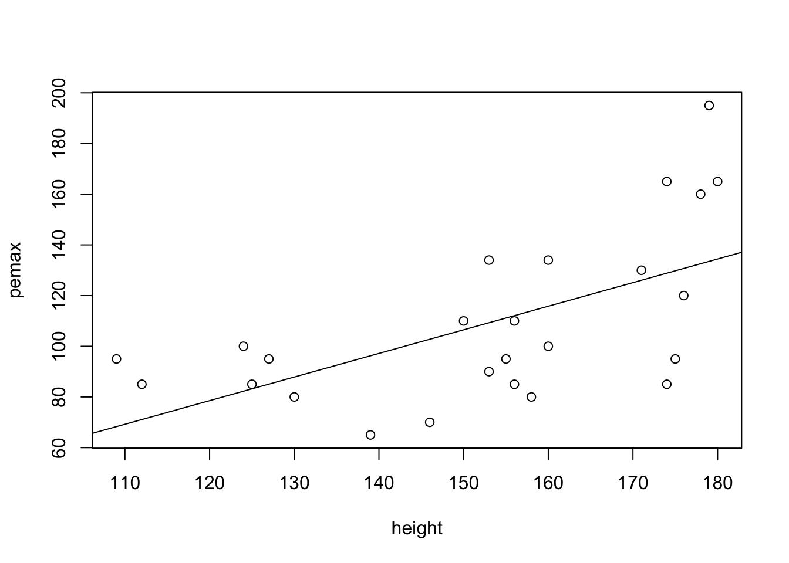
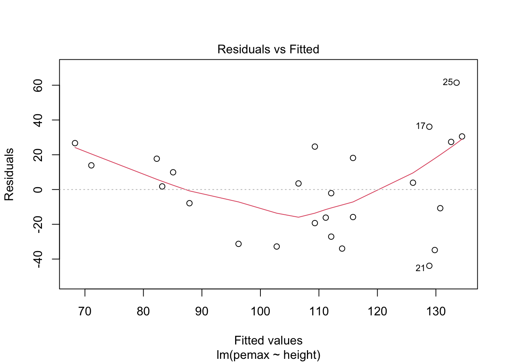
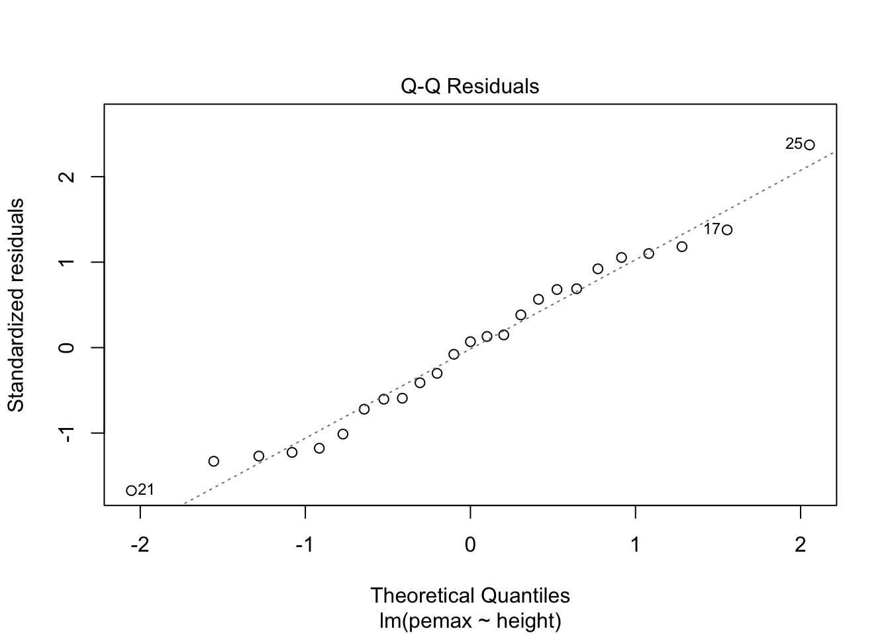
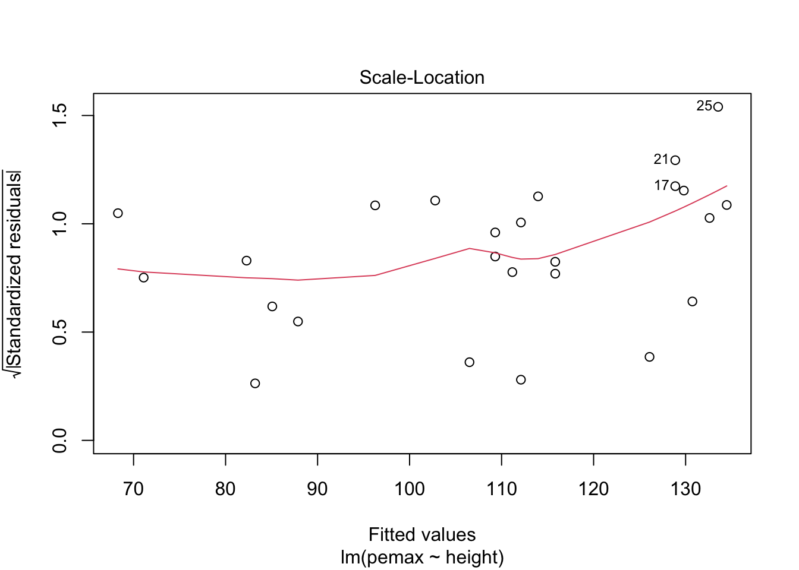
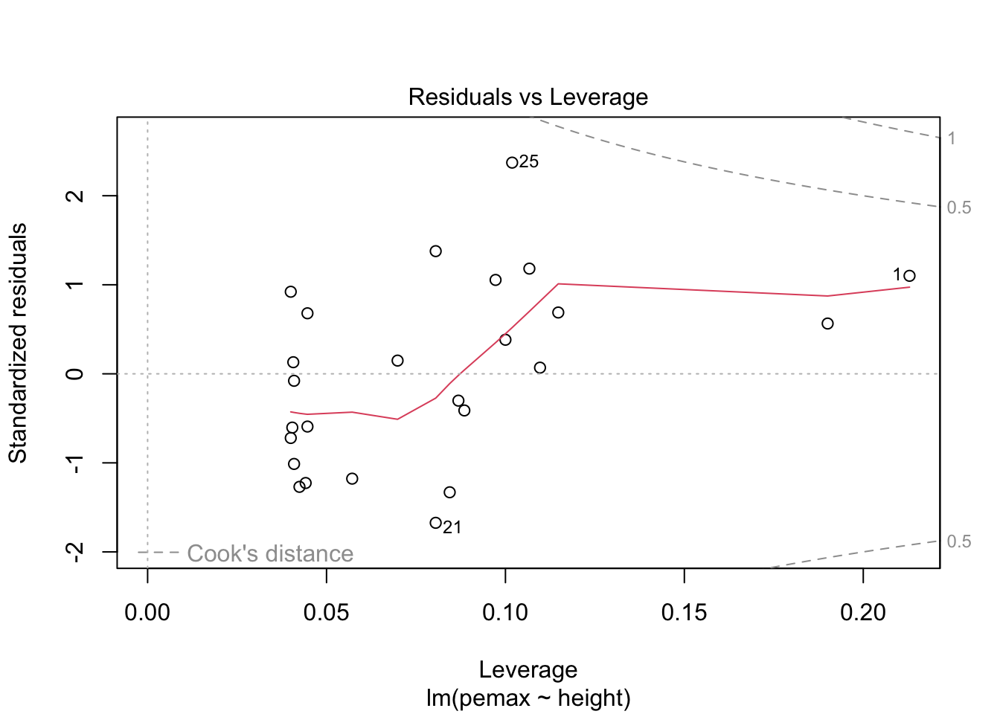
3.2 Predictions
Let’s return to the cystfibr data set and consider predictions. Suppose that a new patient presents, and we measure all of their data except pemax, and we want to predict their pemax.
## age sex height weight bmp fev1 rv frc tlc pemax
## 17 17 Male 155.6 42.7 65.8 58.1 127.6 98.8 122.1 165We can take our final model of pemax described by weight and use that.
mod <- lm(pemax ~ weight, data = cystfibr)
predict(mod, newdata = new_patient, interval = "predict")## fit lwr upr
## 17 114.2181 58.50256 169.9336We have an estimate of 146 with a range of possible values from 87 to 205.
What if we had used height?
mod2 <- lm(pemax ~ height, data = cystfibr)
predict(mod2, newdata = new_patient, interval = "predict")## fit lwr upr
## 17 111.7293 54.02243 169.4363What? This gives us a very different answer! This gives us 116 with a range from 59 to 174. We have kind of said above that from a modeling point of view, it is hard to pick one model over the other. But from a predictive point of view, they are giving us very different answers. How can we decide which one is better at predicting future values? That is the topic of the next chapter!
3.3 Using AIC
One tool for assessing the fit of a model to a data set is the Akaike Information Criterion (AIC). The AIC is a number associated with a model of a data set, for which lower numbers correspond to better models. The formula is \[ AIC = -2 \log \mathrm{likelihood} + 2k \] where \(k\) is the number of parameters included in the model, and the likelihood is the likelihood of the data when using the MLE estimators for the parameters. As we can see from the formula, if we add one parameter to the model, the AIC will go down if the log likelihood increases by 1 or more when adding the parameter. Adding parameters will not decrease the likelihood, so this criterion is balancing how much the parameter increases the likelihood against the value 1.
To understand this, we need to understand lilekihood functions, which are widely used in statistics.
3.3.1 Likelihood functions
Consider a random sample \(x_1, \ldots, x_n\) from a normal distribution with unknown mean and standard deviation. The likelihood of the sample is given as a function of both \(\mu\) and \(\sigma\) by \[ \prod \ttext{dnorm} (x_i, \mu, \sigma) \] If we choose \(\mu\) and \(\sigma\) to maximize the likelihood of the data, then we would take the partials with respect to \(\mu\) and \(\sigma\) and set equal to zero, then solve the equations. We obtain \[ \hat \mu = \overeline{x} \] and \[ \hat \sigma^2 = \frac 1n \sum_{i = 1}^n(x_i - \overline{x})^2 \] Note that we do not obtain the unbiased estimator for \(\sigma^2\), which has \(n - 1\) in the denominator. We call these estimators the maximum likelihood estimators.
One can similarly show that the maximum likelihood estimators for \(\hat \beta_i\) and \(\sigma\) in a linear regression model are as follows. The MLE for \(\hat \beta_i\) are the same as what we obtained when we minimized the SSE. The MLE for \(\hat \sigma^2\) is \(\frac 1n \sum_{i = 1}^n (\hat \epsilon_i - \overline{\epsilon})^2\). Since \(\overline{\epsilon} = 0\), this is usually written as \(\frac 1n \sum_{i = 1}^n \epsilon_i^2\).
3.4 Exercises
Consider the data set
ISwR::secher. Read about the data set by typing?ISwR::secher. We are interested in predicting birth weight on the other variables.Should any of the variables be removed immediately without doing any testing?
Find a minimal meaningful model that explains birthweight in terms of other variable(s).
Check the residuals.
In this exercise, you will see evidence that adding variables always increases the multiple R squared, but that adding noise to a model generally decreases the adjusted R squared. Consider the
cystfibrdata set from the section. Definecystifbr$random <- rnorm(25).Compute the Multiple R-squared when
pemaxis modeled on all of the predictors. How does it compare to 0.6373354? You may need to compute it out to many digits to see a difference!Repeat for the adjusted R-squared. How does it compare to 0.4197366?
For this exercise, use the data frame
ddthat we created with the following code:
set.seed(1262020)
x1s <- runif(30, 0, 10)
x2s <- runif(30, 0, 10)
x3s <- runif(30, 0, 10)
dd <- data.frame(x1s = x1s,
x2s = x2s,
x3s = x3s,
ys = 1 + 2 * x1s + 3 * x2s + rnorm(30, 0, 10)
)Suppose that we know that \(\beta_1 \not= 0\), and we wish to test \(H_0: \beta_2 = \beta_3 = 0\) versus \(H_a\): at least one of \(\beta_2\) and \(\beta_3\) is not zero. Repeat the analysis in Section 3.0.1, mutatis mutandis. The outline of what you need to do is given in the section.
that’s a joke. it is close to .05, but there is nothing magical about .05.↩︎